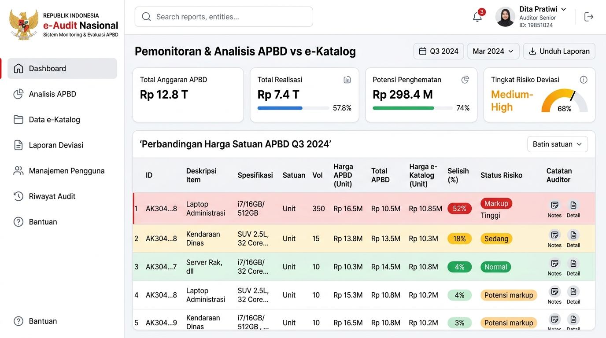
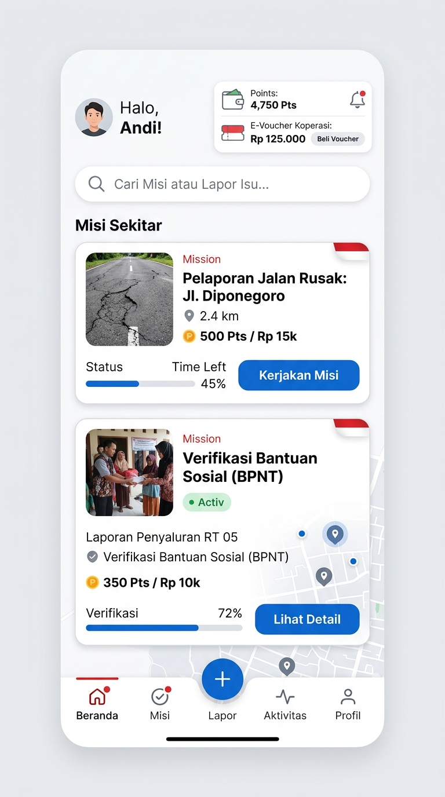

Solusi GovTech nasional terintegrasi untuk mencegah kebocoran APBD sejak tahap perencanaan menggunakan kecerdasan buatan, serta mengawal pembangunan fisik secara partisipatif di lapangan.
Integrasi portal pemantauan e-Audit untuk internal auditor pemerintah (APIP) dan aplikasi audit partisipatif bagi warga lokal.


Bagaimana Kawal Rupiah melindungi APBD secara komprehensif dari hulu hingga ke hilir.
Menganalisis file rencana APBD secara otomatis berbasis RAG dan Gemini Embeddings untuk mendeteksi deviasi harga satuan tidak wajar dibanding e-Katalog LKPP.
Mendayagunakan warga sekitar proyek sebagai verifikator fisik independen di lapangan. Melakukan unggah bukti foto dan koordinat GPS secara real-time.
Voucher insentif verifikasi warga bersifat closed-loop, hanya dapat dibelanjakan untuk bahan pangan pokok di koperasi mitra untuk menggerakkan ekonomi lokal.
Otomatisasi pencatatan audit log yang aman dan transparan tanpa celah intervensi, memastikan dana insentif mengalir tepat sasaran.
Langkah-langkah operasional platform Kawal Rupiah dari perencanaan hingga pengawasan fisik.
Dokumen usulan APBD diunggah ke sistem dan diproses oleh AI Price Oracle untuk menemukan deviasi harga barang/jasa.
Misi verifikasi di lapangan dibagikan secara otomatis ke aplikasi warga lokal di sekitar koordinat lokasi proyek fisik.
Warga mengambil foto real-time dengan proteksi GPS anti-root dan anti-mock location untuk memastikan keaslian lokasi.
Setelah lolos verifikasi konsensus, warga mendapatkan E-Voucher belanja bahan pangan pokok di Koperasi Merah Putih setempat.